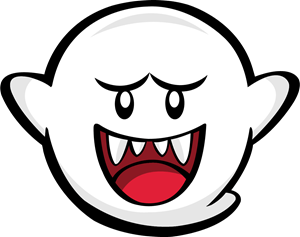

Details
Games Luigi Is Found In
| Games | |
| Nintendo Switch | Other Consoles |
| Mario Kart Deluxe | Mario Kart 8 |
| Luigi's Mansion 3 | Super Mario Bros U |
| Super Mario Party | New Super Luigi U |
Luigi makes quite an appearance in a broad spectrum of games.
Extra Links
| Terminal Montage | Nintendo |
| SMG4 | Luigi Wikepedia |
| NS Parental Controls | Mario Wikepedia |
Luigi gets scared EASILY.. 